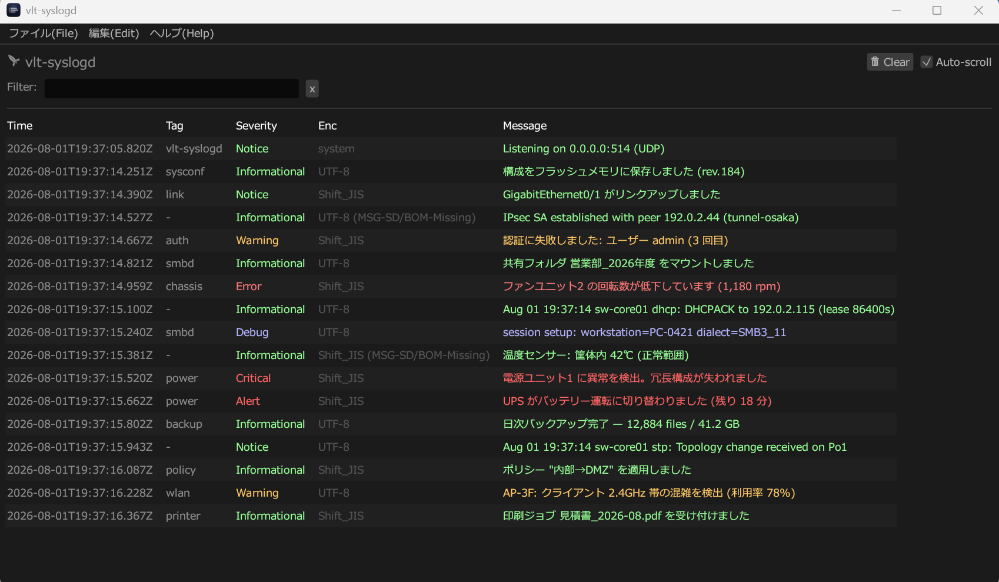
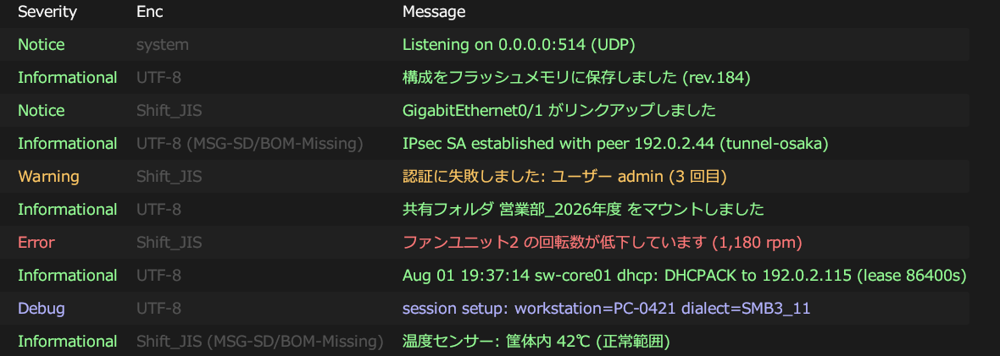

Veltrea Syslog Server
syslog を受信して表示するだけの道具です。受信した 1 通ごとに文字コードを判定して復号するので、Shift_JIS の機器と UTF-8 の機器が同じポートに混ざっていても日本語が化けません。 インストール不要の単一ファイル。

文字コードは 1 通ごとに決める
通信全体で 1 つの文字コードを決め打ちするのではなく、届いた 1 通ずつを別々に判定します。判定に使った根拠は Enc 欄にそのまま出るので、表示を信じてよいかどうかを 利用者の側で確かめられます。

重大度も色で分けています（Notice ・ Warning ・ Error ・ Debug）。元のバイト列は捨てずに 持っているので、行を右クリックして Copy as Hex で取り出せます。表示がおかしいと思ったとき、送信側とこちらの どちらの問題かを切り分けられます。
- UTF-8 ／ Shift_JIS
- RFC 3164 などで届いたものを、バイト列から判定して復号した。
- Shift_JIS (MSG-SD/BOM-Missing)
-
RFC 5424 の構造化データが
charset="Shift_JIS"と宣言していたので、それに従った。BOM は付いていなかった。 - UTF-8 (MSG-UTF8/BOM)
- 宣言は無かったが BOM があったので UTF-8 として読んだ。
- UTF-8 (Implicit)
- 宣言も BOM も無く、UTF-8 として妥当だったのでそう解釈した。
- Shift_JIS (Guess)
- 手掛かりが無く、バイト列から推定した。ここだけは推測。
三つの形
syslog を読む部分は同じ実装で、動かし方だけが違います。 迷ったら Portable から。
| 形 | 何をするもの | 待ち受け | 常駐 |
|---|---|---|---|
| Portable | 自分で UDP を待ち受ける単体の GUI。ダブルクリックで起動し、 その場で受信が始まる。インストール不要。 | 514/udp |
しない |
| Server | 画面を持たない常駐エンジン。Windows サービス / launchd / systemd として OS 起動時から受信する。 |
514/udp5141/tcp5142/tcp
|
する |
| Console | 常駐している Server に TCP で繋いで見る GUI。閉じても受信は 止まらない。サービスの開始・停止もここから。 | — | しない |
配信 (5141) と制御 (5142) は既定でループバック限定、かつ共有トークンで 保護されています。詳しくはマニュアルのネットワークの節へ。
入手して動かす
最新は v0.4.0。用途に合うものだけ落としてください。
| OS | 形 | ファイル |
|---|---|---|
| Windows | Portable |
vlt-syslogd-portable-windows-v0.4.0.zip
|
| Windows | Server ＋ Console |
vlt-syslogd-srv-windows-v0.4.0.zipvlt-syslogd-console-windows-v0.4.0.zip
|
| macOS | Portable |
vlt-syslogd-macos-portable-v0.4.0.dmg
|
| macOS | App |
vlt-syslogd-macos-app-v0.4.0.dmg
|
| Linux | Portable（単一 ELF） |
vlt-syslogd-linux-x86_64-portable-v0.4.0
|
-
展開して起動する
Portable はインストール不要です。展開して
vlt-syslogd-portable.exeをダブルクリック。 SmartScreen が出たら「詳細情報」→「実行」。 -
1 行目で待ち受けを確かめる
Listening on 0.0.0.0:514 (UDP)と出れば成功です。失敗していればその旨が出るので、環境設定で 1024 番以上のポートに変えます。 -
試しに 1 通投げる
行が増えれば完了です。
$u = New-Object System.Net.Sockets.UdpClient $b = [Text.Encoding]::UTF8.GetBytes('<132>auth: 認証に失敗しました') $u.Send($b, $b.Length, '127.0.0.1', 514) | Out-Null; $u.Close()常駐させたい、別の機器から受けたい、という先は マニュアルにあります。
先に言っておくこと
macOS / Linux の 514 番は特権ポート
0〜1023 番は root でないと bind できません。macOS（Mojave 以降）は
0.0.0.0:514 なら root 不要ですが、
127.0.0.1:514 のように特定のインターフェースを
指定すると root が要ります。Linux では root か
CAP_NET_BIND_SERVICE が必要です。
1024 番以上に変えれば済む話でもあります。
macOS 版は ad-hoc 署名（公証なし）
Apple Developer 登録をしていないため、初回起動で Gatekeeper に
止められます。右クリック →「開く」を一度行うか、
xattr -dr com.apple.quarantine で隔離属性を
外してください。
「サービス稼働中」は「ポート到達可能」ではない
Server が動いていても、ファイアウォールが UDP 514 を塞いでいれば
リモート機器のログは 1 通も届きません。受信できないときは
bind_addr、ファイアウォール、送信側の宛先 IP の順に
確かめてください。